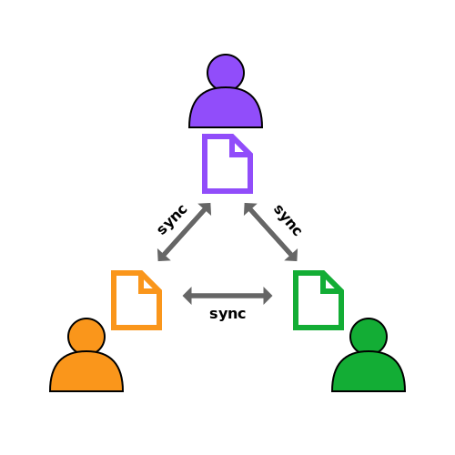
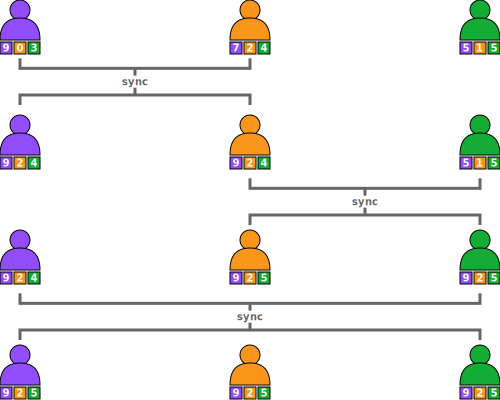

Conflict-Free Replicated Datatypes (CRDT)

A state-based Conflict-Free Replicated Datatype (CRDT) is any datatype that defines a merge function that combines any two instances—any two replicas—into one without any conflict or manual conflict resolution.
We expect the two following properties to hold:
- The order of merging any number of replicas should not change the result, and
- merging a replica with itself must not introduce any change to that replica, i.e. the replica remains constant.
When applied to two replicas the first property entails that merge must be commutative.
When applied to three or more replicas the first property entails that merge must be associative.
And the second property entails that merge must be idempotent.
Example: GCounter
A conflict-free replicated growing counter (GCounter) between three peers is implemented as a map between a peer's identifier and a number. The counter not only tracks the number of increments but tracks the origin of each increment. For example in the following figure, at the beginning—on the first line—the purple peer incremented the counter 9 times, received 0 increments from the yellow peer and 3 increments from the green peer. On the other hand the yellow peer received 7 increments from the purple peer, incremented its counter 2 times, and received 4 increments from the green peer. After syncing the purple and the yellow peer—on the second line—both agree on the number of increments. They do so by taking the pair-wise maximum number of increments. Finally after all peers sync—on the last line—they all agree on the number of increments and they are all able to deduce that there were 9+2+5 = 16 increments in total among them.
The following two code snippets show how a GCounter can be implemented using Propel's language which you can use in the editor above, and using Propel's Scala DSL.
Propel Lang
(type nat (rec x {Zero (Succ x)})) ; natural numbers(type list (rec x {Nil (Cons nat x)})) ; lists(def max (fun nat nat nat)(lambda [comm assoc idem] (x nat) (y nat)(cases (Tuple x y)[(Tuple Zero y) y][(Tuple x Zero) x][(Tuple (Succ a) (Succ b)) (Succ (max a b))])))(def merge (fun list list list)(lambda [comm assoc idem] (x list) (y list)(cases (Tuple x y)[(Tuple Nil _) Nil][(Tuple _ Nil) Nil][(Tuple (Cons a xs) (Cons b ys))(Cons (max a b) (merge xs ys))])))
Propel in Scala
enum Num:case Zero; case Succ(num: Num);def max =prop.rec[(Comm & Assoc & Idem) := (Num, Num) =>: Num]: max =>case (Zero, y) => ycase (x, Zero) => xcase (Succ(n), Succ(m)) => Succ(max(n, m))def zipWith[P >: (Comm & Assoc & Idem), T] =prop.rec[(P := (T, T) =>: T)=> (P := (List[T], List[T])=>: List[T])]: zipWith => f =>case (Nil, y) => ycase (x, Nil) => xcase (x :: xs, y :: ys) => f(x, y) :: zipWith(f)(xs, ys)def mergeGCounter =prop[(Comm & Assoc & Idem):= (List[Num], List[Num]) =>: List[Num]]:zipWith(max)
How do we guarantee that implementations of merge satisfy these properties?
The state of the art is to verify models of these CRDTs manually or automatically by instantiating some framework.
Other works have developed code synthesizers that generate a merge function with the required properties given the desired semantics.
Both approaches limit developers.
Our solution is to develop a type-system that tracks these properties and a compiler that can prove these properties at compile-time.
Properties We Support
Binary Functions

Commutativity
A commutative function is one whose arguments can be given in any order without changing the result
E.g. Average of two numbers

Idempotency
If an idempotent function is called with the same argument it must return it
E.g. Set union

Associativity
An associative function is one that can be folded in any direction on arguments without changing the result
E.g. Matrix multiplication

Selectivity
A selective function must always return one of its arguments
E.g. Maximum of two numbers
Binary Relations

Reflexivity
A reflexive relation is one where every element is related to itself
E.g. Equality

Symmetric
A symmetric relation is one where an element is related to another if and only if the other is related to it
E.g. Inequality
Transitivity
In a transitive relation if an element a is related to b and b is related to c then a must be related to c
E.g. Ancestry

Connectivity
A connected relation is one where between any two distinct elements some relation exists
E.g. Total order

Antisymmetry
An antisymmetric relation is one where between any two distinct elements at moste one relation exists
E.g. Divisibility
Getting Started
Building and Loading the Propel Docker image
We provide you with propel.tar.xz on Zenodo (doi: 10.5281/zenodo.7817421), which is a pre-built container image that contains all necessary programs.
To load, run the following command:
$ docker load < propel.tar.xz
Further, we also provide the option to build the contain anew. To build, run the
following command which takes between 10 and 20 minutes:
$ docker build -t propel .
Rebuilding the image may not work on Apple M1 machines because of incomplete emulation of system calls (specifically the inotify kernel subsystem).
Hence, we recommend rebuilding the image on a platform fully supported by Docker, like x86-64 systems.
Compiling Propel
The provided container already contains a binary executable of Propel.
To compile Propel to Java bytecode yourself, run the following command:
$ docker run -it --rm propel bash -c 'cd /propel; sbt clean compile'
To compile Propel to a native binary yourself, run the following command:
$ docker run -it --rm propel bash -c 'cd /propel; sbt clean nativeLink'
Compiling Propel, to bytecode or to a native executable, may not work inside the Docker container on Apple M1 machines for the reasons mentioned earlier.
The resulting binary is at /propel/.native/target/scala-3.2.2/propel.
The propel executable in the $PATH is already symlinked to that binary file.
Hence, by default, you can just run propel.
Scala DSL
Code Examples
From the Propel Docker image
Propel is also provided as a DSL in Scala.
To experiment with the DSL, we invite you take a look into the following files in the Propel Docker image:
/propel/src/test/scala/propel/ScalaExamplesNat.scala,
/propel/src/test/scala/propel/ScalaExamplesNum.scala and
/propel/src/test/scala/propel/ScalaExamplesList.scala inside the container.
As an example, you can execute the following commands to run a shell, explore the files and recompile the project:
$ docker run -it --rm propel bash # open a shell
$ nano /propel/src/test/scala/propel/ScalaExamplesList.scala # open the file
# edit and save the file
$ cd /propel && sbt Test/compile # recompile
Compiling the examples may not work inside the Docker container on Apple M1 machines for the reasons mentioned earlier.
You may define your own function using the following syntax:
def myFunction = prop[(FunctionProperties) ::= (T1, T1) =>: T2] { (x, y) => body }
// or
def myRecursiveFunction = prop.rec[(FunctionProperties) ::= (T1, T1) =>: T2] { myRecursiveFunction => (x, y) => body }
myFunction is the name of the function, FunctionProperties is a list of function properties the function has (separated by &), T1 is the type of the arguments of the binary function, T2 is the return type of the function, x and y are the names of the function arguments, and body is the function body.
The function properties are chosen from the following list: Comm, Assoc, Idem, Sel, Refl, Antisym, Trans, Conn, and Sym.
If Propel is able to prove the properties that the function is annotated with, then compilation succeeds. If the properties cannot be proven, then a compilation error indicates which property could not be proven.
For example, you can add the following GCounter CRDT example to one of the files in /propel/src/test/scala/propel
def mergeGCounter = prop[(Comm & Assoc & Idem) := (List[Num], List[Num]) =>: List[Num]] { (x, y) => zipWith(maxNum)(x, y) }
Publications
- George Zakhour, Pascal Weisenburger, and Guido Salvaneschi. 2023. Type-Checking CRDT Convergence. In Proceedings of the 44th ACM SIGPLAN Conference on Programming Language Design and Implementation, PLDI, June 17-21, 2023, Orlando, Florida, United States. https://doi.org/10.1145/3591276 [author version]